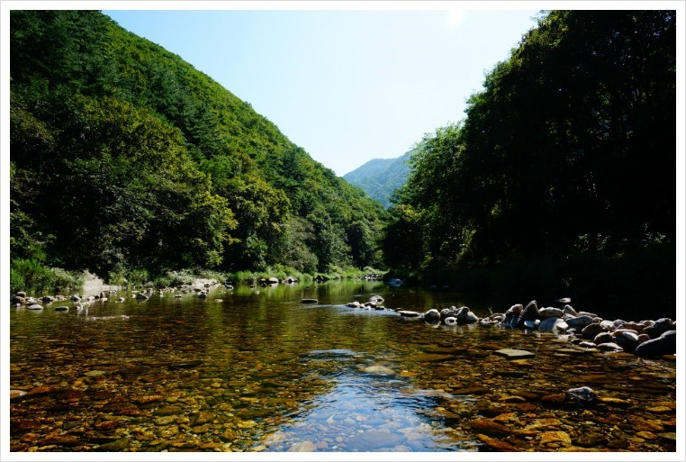
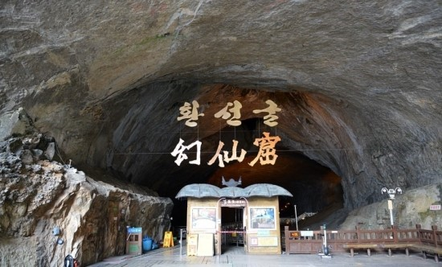
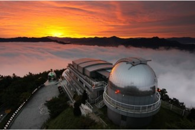

°˖✧영월, 삼척✧˖°
  올해 여름이 정말 뜨거웠는데요, 저는 가장 더웠던 8월 초 가족들과 강원도로 1박2일 여행을 떠났습니다.
지금부터 가족들과 갔던 강원도의 영월과 삼척에 대해 소개하겠습니다!!
첫번째로 추천드릴 곳은 영월에 있는 ‘김삿삿 계곡’입니다.
정말 무더운 한여름이었지만 계곡에 발을 담그자 마자 온몸이 시원해지면서, 더워서 받았던 스트레스가 싹 날라갔습니다!!
역시 여름엔 계곡!!!!
다음으로 추천드릴 곳은 영월에 있는 ‘별마로 천문대’입니다. 이곳은 국내 시민 천문대로서는 최대 규모의 80cm급
반사 망원경이 설치되어 있고, 보조망원경 10대를 갖춘 슬라이딩 돔이 있습니다. 제가 갔던 날은 구름이 많이 껴 있어서
별을 많이 보지는 못했지만, 날씨가 좋은 날에 간다면 그 어떤 것보다도 가장 아름다울 것 같습니다!!
마지막으로 추천드릴 곳은 삼척에 있는 ‘환선굴’입니다.
이 주굴 길이는 약 3.3km이고, 총길이는 약 6.5km입니다. 환선굴을 포함한 대이리동굴지대는 천연기념물 제178호로
지정되어 있습니다. 정말 더운 한여름에 갔지만 동굴 안에 들어가보니, 정말 우리나라의 봄, 가을 날씨 정도로
쌀쌀해서 좋았습니다. 또한 종유석의 발달이 퇴폐적이나 윤회재생의 과정에 있는 것도 볼 수 있어서
정말 좋은 경험이었던 것 같습니다.
저의 팁을 토대로 즐거운 여행하시길 바랍니다~!~!